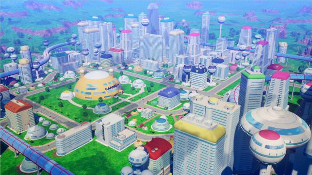

MAPAS
Tierra
La Tierra es designado como el planeta 4032-Verde-877, estando en el borde de la Vía Láctea en el lejano extremo de las Galaxias del Norte, formando parte del Séptimo Universo. Es un planeta muy avanzado en las Galaxias del Norte, y se encuentra dentro de la zona administrativa del Dios de la Destrucción Beerus. Los acontecimientos que ocurren en este planeta están vigilados por Kaio del Norte, el Gran Kaio y los Kaio-shin. En el universo de Dragon Ball, todos los Planetas son vigilados por una deidad. En la mayor parte de la serie, Dios es el dios de la Tierra, pero luego de su fusión con Piccolo, es Dende quien ocupa este lugar. Como Dios y Dende son de Namek, tienen la capacidad de crear siete Esferas del Dragón, para que el que las obtenga todas pueda pedir un deseo.
La Tierra se encuentra muy avanzada tecnológicamente. Vehículos voladores, cápsulas que sirven para transportar objetos pesados, y robots, son algunos de los objetos que se encuentran en el planeta.
Políticamente, la Tierra tiene una Monarquía Constitucional en todo el planeta. Se divide en 43 regiones, dirigidas por un Rey. También hay un gran ejército militar que defiende las amenazas que se encuentran en la Tierra.
La moneda estándar es el Zeni, que aparece como recompensa para el ganador del Torneo Mundial de las Artes Marciales, otra moneda, el Yen (basado en la moneda oficial de Japón en el mundo real) se usa en la región oriental del planeta y vale lo mismo que el Zeni.
La Tierra es un planeta con unas reservas abundantes de Oro etéreo, un material no renovable usado como combustible fósil.
Los humanos fueron víctimas de múltiples ataques, como por ejemplo el de Cell y el de Majin Boo, y la Tierra también se vio afectada debido a los impactos que recibía durante las batallas de los Guerreros Z. La Tierra fue destruida tres veces, la primera vez debido a un ataque de Pequeño Boo, la segunda por Freezer y la tercera por Baby (solo en Dragon Ball GT).
Namek

El planeta posee una atmósfera respirable, lo que lo hace habitable para especies que requieran oxígeno para vivir. Así mismo, la mayor parte de la superficie del planeta se compone de un conjunto de islas conectadas entre sí por un enorme océano que abarca todo el planeta. Las islas más grandes albergan pequeñas aldeas donde los Namekianos viven. Es un planeta con una vegetación promedio, donde las especies que lo habitan en lo que a la vida silvestre se refiere, están las ranas, peces y dinosaurios. Se sabe que alrededor de 100 Namekianos habitan la superficie del planeta (si sumamos la cantidad de la población durante la Saga de los Saiyan). Namek cuenta con tres soles, lo cual hace imposible la existencia de la noche en el planeta. No obstante, algunas imágenes nos muestran al planeta con un lado oscuro lo cual contradiría esa situación. De cualquier modo, el planeta en promedio, tarda unos 130 días en dar toda la vuelta sobre su órbita. Los 130 días en Namek es el año para ellos en su calendario.
Hace muchos años el planeta vivió una terrible catástrofe natural que produjo un cambio climático en la superficie del planeta, matando a la mayoría de la población y acabando con la flora del lugar (Ajisa). Aunque hubo sobrevivientes, la mayoría debió huir hacia otro planeta, como es el caso de Katattsu, el padre de Piccolo Original quién más tarde se fisionaría dando lugar a Piccolo Daimaō y Kami.
Uno de los pocos sobrevivientes de esta catástrofe fue el Gran Patriarca quién creyó que era el único Namekiano superviviente hasta que se dio cuenta que Katattsu envió a su hijo al Planeta Tierra, el Gran Patriarca aprovechó de la capacidad de su raza para engendrar descendencia de manera asexual, con esto dio a luz a 109 Namekianos quienes empezaron a repoblar el Planeta.
En el Año 762, Freezer llega a Namek para conseguir la inmortalidad por medio de las Esferas del Dragón y causar la muerte de los Habitantes de 5 de los 6 pueblos del Planeta (excepto Nail) y luego destruye el Planeta en su batalla con Goku, todos los Namekianos fueron revividos en la Tierra gracias a las Esferas del Dragón Namekianas, excepto los habitantes de la Aldea de Tsuno al ser asesinados por Vegeta.
Los Namekianos usaron las esferas para construir un nuevo planeta (ya que las esferas no tenían la capacidad de regenerar el planeta original) para su raza lo que resulto en la creación de Nuevo Namek donde serían transportados todos los miembros de la raza (excepto Piccolo).
El Otro Mundo
El Otro Mundo (あの世, Ano Yo) en contraparte al Mundo de los vivos, es, en Dragon Ball, la versión del mundo de los muertos. Es donde los personajes van cuando mueren, y también donde residen las deidades superiores del universo. En el episodio 53 del anime, el Otro Mundo fue descrito como "la dimensión siguiente", y el acto de desear traer a la vida a una persona muerta con las Esferas del Dragón se llama "traer (a ellos) a esta dimensión."
El Infierno y el Paraíso son los dos principales destinos de los humanos y criaturas fallecidas en el más allá, sin embargo, también existe un plano que existe entre los dos. Este plano dimensional contiene los planetas personales de deidades como los Kaio y los Kaio-shin, así como la burocracia celeste que está a cargo de la ejecución de las actividades cotidianas del Otro Mundo, tal como el Gran Rey Enma.